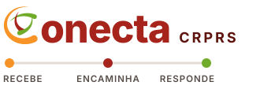

Conecta CRPRS — 3 propostas com o símbolo no lugar do “C”
O símbolo oficial (logo_vazado.png) faz o papel da letra C de Conecta.
G — Palavra. O símbolo é o C de Conecta; abaixo, o que o sistema faz: gestão de demandas por setor.H — Duas linhas. O C abraça ONECTA e CRPRS: um ponto de entrada para todos os setores.

I — Fluxo. Abaixo do nome, o caminho de cada demanda: recebe (e-mail), encaminha (setor), responde.